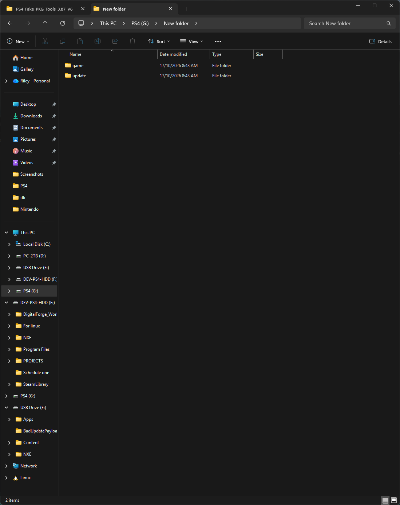

PROJECT OVERVIEW
What is Digital Forge?
Digital Forge is a desktop application for preparing and organizing console game files on Windows and Linux. It brings supported file workflows together in one place, with clear platform choices and visible processing results.
What it does
Digital Forge works with files already available on your computer or connected storage. It identifies supported platforms and input formats, checks relevant structure or metadata, and offers the operations implemented for that particular workflow. Depending on the input, this can include organizing a supported format, extracting an archive, converting a disc image, or preparing a platform-specific package.
Available operations depend on the selected console and source format. A format appearing in the catalog does not mean it can be converted to every other format. The application presents the workflows supported for the selected input.
How it works
- Select the console platform and provide a local game file, archive, package, disc image, or supported game folder.
- Digital Forge inspects the input and checks the information needed by that workflow.
- Choose an available operation and output location. The application processes the files and reports progress or errors.
- Review the resulting files and any available validation or diagnostic details.
Automated game-folder layout
For supported game-folder imports, place the files in this layout. The outer folder can have any name; New folder is fine. Put the base game files in Game. If you have an update, put its files in the sibling Update folder. An update is optional.

Drag and drop the outer parent folder (for example, New folder) into Digital Forge. The application detects the included content and carries out the available workflow for that game and platform. Without an update, it continues with the base game alone.
When a game comes in multiple parts
Keep every part together in the appropriate Game or Update folder. Rename the title portion so the parts are numbered in order, while preserving the original format suffix and extension. For example, a multipart RAR set can be named Part 1.rar, Part 2.rar, and so on. The shorter form is PT1.rar, PT2.rar, and so on. For other volume formats, keep the sequence and suffix required by that format; do not remove or change its extension. Include all parts so Digital Forge can find the complete set.
DLC is optional. Most Digital Forge workflows process the base game and optional update only, and ignore the DLC folder. DLC is included only when the selected output format explicitly supports it. In the usual case, the result contains the game and, if provided, its update.
Digital Forge supports a range of console families. Browse the current supported formats or use Guides search for instructions for the platform and task you have in mind.
Compatibility and support
Successful processing means the selected file operation completed. It does not guarantee that a game will run on a particular console or emulator. Digital Forge processing reports and emulator compatibility are separate: community processing reports are tracked through GitHub Issues, while emulator results belong to each emulator's own compatibility source.
For help, see the compatibility and support page and search the guides and existing reports first. When reporting a processing problem, include the application version, relevant input details, the steps taken, and a diagnostic report after reviewing it for private information.
Digital Forge source repository · Community reports and support